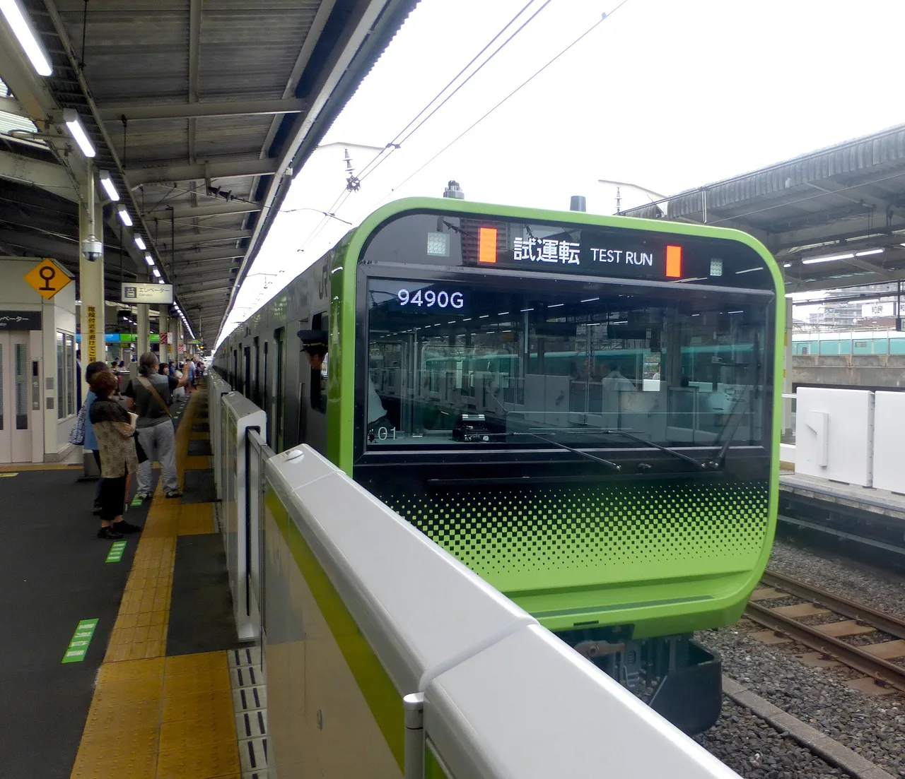

Yamanote Line departure melodies: the 6 stations with their own tune
Every time a Yamanote Line train is about to close its doors, the platform plays a few seconds of music. Most guides will tell you that all 30 stations have their own tune. In 2026 that's no longer true: JR East has spent the last two years replacing station-specific music with one standard melody per line, and only six stations on the loop still play something that belongs to that place — a 1949 film theme, an anime opening, a folk song about cherry blossoms, and three corporate jingles. This guide tells you which six, exactly where each plays, what the other 24 sound like now, how to hear all six in about an hour, and why you should do it sooner rather than later.

What a departure melody is — and the words for it
The music you hear is the departure melody — 発車メロディ (hassha merodī) in JR East's own wording. It plays when the train is ready to leave; when it stops, the doors close. Japanese speakers shorten the whole genre to 駅メロ (eki-mero, "station melody"), and a melody chosen because of some local connection is a ご当地メロディ (gotōchi merodī, "local-specialty melody") — the same gotōchi you'll see on regional Kit Kats and manhole covers.
The Yamanote is where the whole idea started. On 11 March 1989, JR East replaced the harsh electric bells at Shinjuku and Shibuya with short melodies developed at Yamaha by the sound designer Yūaki Ide; the design brief was music that would still be bearable after the ten-thousandth hearing, would carry across a noisy platform at low volume, and wouldn't clash when several played at once. The idea spread across the network, and from the late 1990s stations began choosing melodies with a story attached — which is what you're hunting for here.
Why the Yamanote's melodies are on a clock
Two things have changed since most English articles about "Tokyo's 30 station jingles" were written.
The standard melodies were replaced. From October 2024, JR East began swapping its old stock tunes (the ones fans knew as "Seseragi", "Haru" and the JR-SH series) for an in-house numbered series it calls JRE-IKST. JR East's own list of managed melodies, dated 23 October 2025, gives the Yamanote's standard pair as JRE-IKST-010-01 for the inner loop and JRE-IKST-010-02 for the outer loop, and the same list carries an arranged version of it titled "Hands of Mountains" — a nod to Yamanote, "the hand of the mountains". Fan trackers logged the first switch at Shinjuku on 24 October 2024 and Tokyo on 31 October, with most of the loop following in early 2025. Ōsaki even got two variants of its own for platforms 2 and 4 (fans describe them as harp and glockenspiel versions), and Shinagawa a third for reverse departures from platform 3.
Station melodies vanish when a line goes one-man. A departure melody is triggered by the conductor from the platform. JR East is moving its Tokyo-area lines to driver-only operation, and every time that has happened so far, the station melodies stopped: the Nambu Line's local tunes ended in March 2025 the day before one-man service began, and separately, as part of the standardisation, Sakuragichō's "I've Been Working on the Railroad" — played since 2015 at the site of Japan's first railway station — was replaced by a generic melody in May 2025 (JR East's list now assigns the standard Keihin-Tōhoku tune to its platforms). In September 2025 JR East announced that the outer sections of the Keihin-Tōhoku/Negishi Line (Ōmiya–Minami-Urawa and Kamata–Ōfuna) and the Chūō-Sōbu local line would go one-man in spring 2027, within a plan to cover its main Tokyo lines by around 2030. No date has been published for the Yamanote itself, but the direction is not in doubt. The six melodies below are worth hearing while they exist.
JR East says plainly that it does not announce melody changes in advance and that its own published list "may differ from the current state". Everything here was checked against JR East's October 2025 list, company press releases and Japanese railway press as of August 2026 — but the honest promise is "this was true when we checked", not "this will be true when you arrive".
The six stations with their own tune
Three are local heritage; three are paid corporate tie-ups. In loop order from Tokyo Station, clockwise (the outer loop, 外回り soto-mawari):
Kanda 神田 — the Mondamin jingle
The shortest of the six and the easiest to miss: the mouthwash jingle "Okuchi, kuchu-kuchu, Mondamin" from Earth Corporation, whose head office stands next to the station. It began on 2 October 2023 under a naming-rights deal that also renamed the station sign "Kanda (Earth Corporation HQ-mae)", with a contract running to 30 September 2028. It plays only on the Yamanote platforms (2 and 3 in JR East's list, where the title is recorded as "undisclosed"); the Keihin-Tōhoku and Chūō platforms use standard melodies.
Komagome 駒込 — 「さくらさくら」 Sakura Sakura
The old Somei village that became Komagome is where the Somei-Yoshino cherry — the variety that turns Japan pink every spring — was bred, so the local shopping street asked for the folk song "Sakura Sakura". It started in March 2005, initially as a spring-only melody, and is now year-round. This is the most rewarding station for a listener: it's one narrow island platform, and the two directions play different arrangements — the outer loop's is in a darker minor key, the inner loop's is a bright music-box version. Stand in the middle and you hear both within minutes.
Ikebukuro 池袋 — the Bic Camera theme
The electronics chain's "Bic-bic-bic-bic Camera" jingle, in an arrangement that (in the full song) name-checks the station's owl statue and its eight lines. It began on 1 March 2024; the company's president said it had lobbied JR East and the station master "for many years" and that it was "not a short-term thing", and there is no published end date. Yamanote platforms 5–8 only — Ikebukuro's other lines keep standard music.
Takadanobaba 高田馬場 — 「鉄腕アトム」 the Astro Boy theme
The one everyone knows. Tezuka Productions, the studio founded by Osamu Tezuka, sits near the station, and in the original manga Astro Boy is "born" in April 2003 at a Ministry of Science located in Takadanobaba. The local shopping-street association persuaded JR East to mark the occasion, and the theme started in March 2003 as a two-month trial. It never stopped — it's widely credited as the melody that made gotōchi station music a national habit. As at Komagome, the inner and outer loop use different cuts of the tune so they don't blur together on the busy island platform.
Ebisu 恵比寿 — 「第三の男」 The Third Man theme
Anton Karas's zither theme from the 1949 film has been the TV jingle for Yebisu Beer for decades, and the beer is the reason the station exists: it was built to ship beer from the Yebisu brewery, which stood here until 1988 (Yebisu Garden Place is on the site). The melody started in June 2005 and, unusually, plays on all four JR platforms — Yamanote 1 and 2 plus the Saikyō/Shōnan-Shinjuku platforms 3 and 4 — in more than one arrangement. If you only have time for one station, this is it: the tune is the longest and most tuneful of the six.
Takanawa Gateway 高輪ゲートウェイ — "Glorious Gateway"
The newest and the most orchestral. When JR East opened its Takanawa Gateway City development in spring 2025, it announced that "Glorious Gateway – The Theme of TAKANAWA GATEWAY CITY", composed by Takayuki Hattori and recorded by the NHK Symphony Orchestra under Tatsuya Shimono, would be used as the station's departure melody as well as for the district's lighting and hourly chimes. Different cuts of the theme are assigned to different platforms; the Yamanote pair is platforms 1 and 2.
Ueno's "Ā Ueno-eki" (an enka classic about arriving in Tokyo by train) was introduced in 2013 for the station's 130th anniversary — but on a Jōban Line platform, not the Yamanote; the Yamanote platforms at Ueno used a plain bell until 2025 and now play the standard melody. Shinagawa's "Tetsudō Shōka" (the 1900 "Railway Song") played on the Tōkaidō Line platforms, not the loop, and fan trackers report it was retired in June 2025. Kamata's "Kamata March" is on the Keihin-Tōhoku Line — see our nationwide guide. Akihabara, Shinjuku, Shibuya, Tokyo: standard melody, nothing local.
All 30 stations at a glance
Loop order from Tokyo, clockwise. "Standard" means the JRE-IKST-010 pair described above; a handful of stations were still on the older stock tunes when fan trackers last checked, so don't be surprised by a different generic melody. Platform numbers are given only where JR East's own list confirms them.
| # | Station | Yamanote platforms play… | Note |
|---|---|---|---|
| 1 | Tokyo 東京 | Standard (010-01 platform 4 inner / 010-02 platform 5 outer) | Switched Oct 2024, a week after Shinjuku |
| 2 | Kanda 神田 | Mondamin jingle (platforms 2·3) | Since 2023-10; contract to 2028-09 |
| 3 | Akihabara 秋葉原 | Standard | — |
| 4 | Okachimachi 御徒町 | Standard | — |
| 5 | Ueno 上野 | Standard | "Ā Ueno-eki" is on the Jōban platforms, not here |
| 6 | Uguisudani 鶯谷 | Standard / older stock tune | — |
| 7 | Nippori 日暮里 | Standard | — |
| 8 | Nishi-Nippori 西日暮里 | Standard | — |
| 9 | Tabata 田端 | Standard | — |
| 10 | Komagome 駒込 | Sakura Sakura — minor key outer, music-box inner | Since 2005 |
| 11 | Sugamo 巣鴨 | Standard / older stock tune | — |
| 12 | Ōtsuka 大塚 | Standard / older stock tune | — |
| 13 | Ikebukuro 池袋 | Bic Camera theme (platforms 5–8) | Since 2024-03 |
| 14 | Mejiro 目白 | Standard / older stock tune | — |
| 15 | Takadanobaba 高田馬場 | Astro Boy theme — different cuts inner/outer | Since 2003 |
| 16 | Shin-Ōkubo 新大久保 | Standard | — |
| 17 | Shinjuku 新宿 | Standard (010-01 platform 14 / 010-02 platform 15) | Where melodies began, 1989 |
| 18 | Yoyogi 代々木 | Standard | — |
| 19 | Harajuku 原宿 | Standard | — |
| 20 | Shibuya 渋谷 | Standard (010-01 platform 2 / 010-02 platform 1) | Where melodies began, 1989 |
| 21 | Ebisu 恵比寿 | The Third Man — all four JR platforms | Since 2005 |
| 22 | Meguro 目黒 | Standard | — |
| 23 | Gotanda 五反田 | Standard | — |
| 24 | Ōsaki 大崎 | Standard, plus two station-only variants (010-03 on platform 2, 010-05 on platform 4 — fans describe them as harp and glockenspiel versions) | One of two stations with its own variants; Shinagawa platform 3 has 010-04 |
| 25 | Shinagawa 品川 | Standard (010-04 on platform 3 for reverse departures) | "Railway Song" was on the Tōkaidō platforms, reportedly retired 2025 |
| 26 | Takanawa Gateway 高輪ゲートウェイ | Glorious Gateway (NHK Symphony) | Since spring 2025 |
| 27 | Tamachi 田町 | Standard | — |
| 28 | Hamamatsuchō 浜松町 | Standard | — |
| 29 | Shimbashi 新橋 | Standard | — |
| 30 | Yūrakuchō 有楽町 | Standard | — |
A one-hour listening loop
A full lap of the Yamanote takes about an hour, trains run every few minutes during the day, and all six stations are on the loop, so the "route" is simply: ride the outer loop clockwise, get off at each of the six, wait for one departure, get back on. Realistic total with the waits: 90 minutes to two hours. Because the two directions play different arrangements at Komagome and Takadanobaba, budget an extra train there.
- Start at Ebisu (outer loop, platform 1). Hear "The Third Man", then cross to the Saikyō platform to hear the second arrangement if you like.
- Ride outer loop 4 stops → Shinjuku if you want the standard melody where it all began (optional).
- 2 more stops → Takadanobaba. Astro Boy, both directions.
- 2 stops → Ikebukuro. Bic Camera, from platform 7 (outer) — trains usually use 6 and 7.
- 3 stops → Komagome. Sakura Sakura in a minor key on the outer loop; walk five metres and wait for the inner-loop train for the music-box version.
- 8 stops → Kanda. Blink and you miss the Mondamin jingle; it's a few notes.
- 6 stops → Takanawa Gateway. The orchestral finale — and a good place to end, since the station itself is worth ten minutes.
A plain Suica/PASMO or any Tokyo day pass covers it. You never need to leave the paid area: step off, stand on the platform for one departure, step onto the next train — the fare is charged only when you finally tap out.
Recording without being that person
Japanese railway-sound enthusiasts (音鉄, ototetsu) have their own etiquette, and platforms are crowded working spaces. The short version:
- Stay behind the yellow line, always. The melody plays while doors are closing; that is precisely when staff are watching the platform edge.
- No tripods, no boom poles. A phone or a pocket recorder in your hand is fine. Anything on legs on a Yamanote platform is not.
- Don't block the doors or the stairs. Stand at the far end of the platform, where the speakers are just as loud and the crowd is thinner.
- Don't ride one stop back and forth repeatedly at rush hour to catch a melody. Do the loop between 10am and 4pm.
- Announcements between melodies are normal — the "doors closing" and "please don't rush" lines are part of the recording for most collectors.
The Japanese you'll hear on the platform
| Japanese | Reading | What it means |
|---|---|---|
| 発車メロディ | hassha merodī | Departure melody (JR East's own term) |
| 駅メロ | eki-mero | "Station melody" — the everyday word for the whole genre |
| ご当地メロディ | gotōchi merodī | A melody chosen for a local connection |
| 内回り / 外回り | uchi-mawari / soto-mawari | Inner loop (anticlockwise) / outer loop (clockwise) — the Yamanote's two directions |
| 〇番線 | …-bansen | Platform number: 2番線 = platform 2 |
| まもなく発車します | mamonaku hassha shimasu | "Departing shortly" — said just before the melody |
| ドアが閉まります | doa ga shimarimasu | "The doors are closing" — the line the melody leads into |
| 駆け込み乗車はおやめください | kakekomi jōsha wa oyame kudasai | "Please don't rush onto the train" — the plea you'll hear a hundred times |
| 音鉄 | ototetsu | A railway fan who collects sounds — you, by the end of this loop |
Take one home
You can't buy the platform, but you can buy the tune. Four honest options, from most to least specific:
A small Japanese maker sells JR East-licensed EkiChains station-melody keychains (¥2,300 each, USB-C rechargeable) — including a Takadanobaba / Astro Boy version and the pre-2024 Tokyo Station Yamanote melody — from its own shop, which ships to more than a dozen countries including the US, UK and much of Europe and Southeast Asia. Not an affiliate link; it's simply the only place we found that ships these overseas.
Eki-mero Best Selection 2 — Departure Melodies is a CD of the original JR East master recordings (Yamanote, Chūō and Keihin-Tōhoku Lines among others), by the composers themselves — Hiroshi Shiozuka's tunes are the ones you've been hearing for 20 years. It's an import listing on amazon.com; check the seller ships to you.
A phone works. If you want recordings that don't clip when the train arrives, the Zoom H1essential records in 32-bit float (no gain to set, no clipping) and fits in a coat pocket — the standard first recorder for exactly this hobby.
JR East's official shop TRAINIART released a ¥500 capsule-toy series in January 2026 — Gotōchi Departure-Bell Switch Collection — five buttons that play real regional melodies (Sakuragichō, Noborito, Akabane, Hachiōji, Kannai) and, on the OFF button, the "doors are closing" announcement. At least three of those five melodies have since gone silent on their platforms, which makes the toy a small archive. TRAINIART ships within Japan only, and singles turn up on Mercari and Yahoo! Auctions; a proxy service buys and forwards them. There's also a 2024 paperback, 駅メロものがたり (Eki-mero Monogatari, "The Story of Station Melodies"), Japanese-language only. Our proxy comparison explains fees.
Links marked PR are affiliate links (Amazon, Buyee, Remambo). We may earn a small commission at no extra cost to you, and it never changes what we recommend. As an Amazon Associate, NihongoHub earns from qualifying purchases.
Every one of these stations also has a free station stamp → to press, and the melody hunt continues outside Tokyo — Osaka's loop line has a different song at all 19 stations. See Japan's regional station melodies, north to south →
Common questions
Q. Does every Yamanote Line station have its own melody?
A. Not any more. As of August 2026, six stations play a melody specific to that station (Kanda, Komagome, Ikebukuro, Takadanobaba, Ebisu, Takanawa Gateway). The other 24 play a standard tune — mostly JR East's Yamanote pair introduced from October 2024 (one for the inner loop, one for the outer), with a few still on the older stock melodies.
Q. Which is the famous Astro Boy station?
A. Takadanobaba. The theme has played since March 2003, because Tezuka Productions is nearby and Astro Boy is "born" in Takadanobaba in April 2003 in the original story. Inner and outer loop use different cuts of the tune.
Q. Are the Yamanote melodies being removed?
A. JR East plans one-man operation on its main Tokyo lines by around 2030 (parts of the Keihin-Tōhoku/Negishi and the Chūō-Sōbu local line from spring 2027), and on every line converted so far the station melodies stopped. No date has been announced for the Yamanote, but expect the six local melodies to disappear when it converts.
Q. Can I hear all six in one go?
A. Yes — they're all on the loop. Riding clockwise from Ebisu and stopping at each takes roughly 90 minutes to two hours including the waits; see the route above.
Q. Can I buy a recording or a toy that plays them?
A. Yes: an original-recordings CD is listed on amazon.com, a Japanese maker sells JR East-licensed melody keychains that ship overseas, and JR East's shop sells capsule-toy melody buttons in Japan (proxy services can forward them).
How we checked: station-by-station facts were verified against JR East's published list of managed melodies (23 October 2025), the press releases of Earth Corporation, Bic Camera coverage, JR East / Takanawa Gateway City, and Japanese railway press (ITmedia, Impress Watch, Kankō Keizai Shimbun, Tetsudō.com), as of 15 August 2026. Platform-level detail for standard-melody stations comes from fan trackers and is marked as such. Some links are affiliate links — we may earn a commission at no extra cost to you, and it never changes what we recommend.